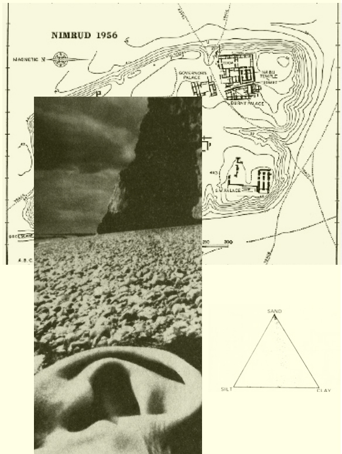

Le projet Espèces Sans Espaces s’inscrit dans la pratique artistique de Thomas Pausz, qui vise à proposer de nouvelles formes de narrations de l’environnement et des relations inter-espèces par la création d'écosystèmes médiatiques mêlant travail documentaire, fiction et création numérique. La démarche de Pausz est relationnelle, et multiplie les points de vue, les changements d’échelles et de temporalités pour composer une experience contemporaine du paysage 'plus qu’humain'.
Au-delà ou en-deçà du progrès technologique, pouvons-nous concevoir des correspondances poétiques entre paysages habités et formes de médiation et de spatialisation, qui mobilisent à la fois des outils digitaux et des interfaces physiques sensibles? Quelle est la place des corps humains et non-humains dans ces dispositifs? En parallèle aux images et sons qui sont intimement liées à notre relation culturelle au paysage, pouvons-nous partager des perceptions non-humaines, des intensités, des arômes fantômes?
Dans le cadre de sa résidence de recherche artistique au Laboratoire Modulaire en 2022 et 2023, Thomas Pausz s’intéresse particulièrement aux écosystèmes côtiers protégés et à l’écologie des zones intertidales de la région Normandie, en partenariat avec des instituts de recherches scientifiques locaux comme la Station Marine du C.R.E.C. et l’Institut Mémoires de l'Édition Contemporaine (IMEC). Le projet Espèces sans Espaces a des enjeux écologiques et s’accompagne de réflexions critiques et de colloques publics sur le rôle des constellations médiatiques émergentes dans l’habitabilité de l'environnement. Ces réflexions feront l’objet d’une première publication retraçant la recherche artistique à l'automne 2023.
